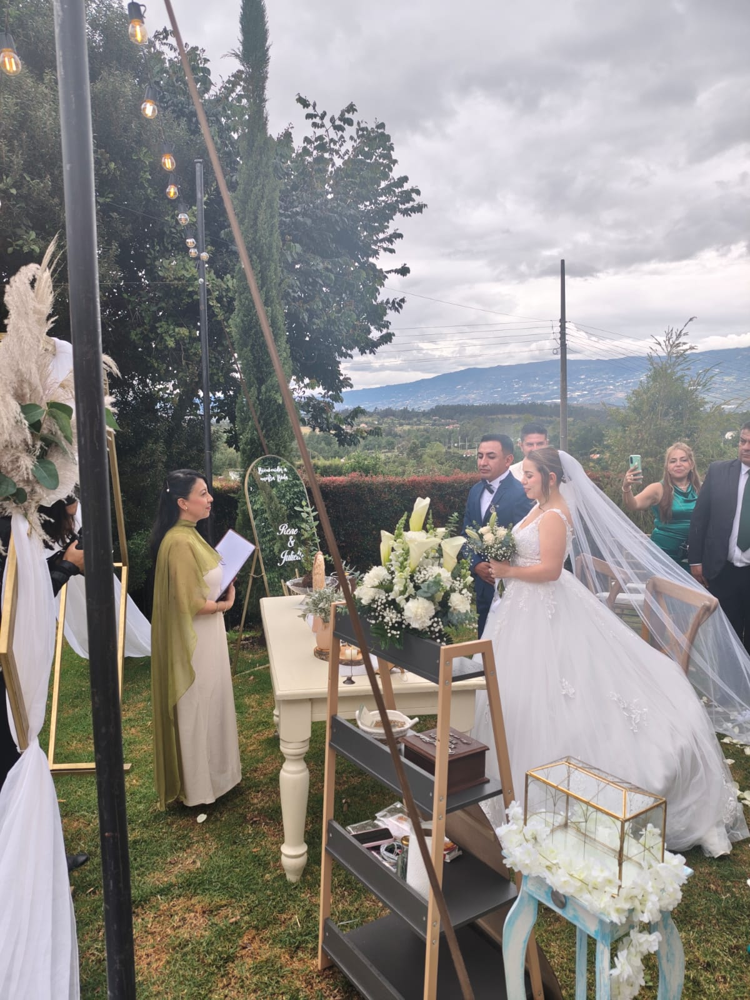

🌿
Ceremonias de Unión
Celebrar el vínculo y elegir volver a encontrarse. — Incluye: bodas conscientes · renovación de votos · aniversarios
¿Para quién?
Para parejas que desean celebrar su historia desde un lugar íntimo, significativo y consciente. Puede ser una boda, una renovación de votos o simplemente una fecha especial que quieran convertir en una experiencia memorable.
Intención
Honrar el camino recorrido, reconocer el vínculo que comparten y expresar de manera simbólica las intenciones que desean llevar a la siguiente etapa de su relación. Más que una ceremonia tradicional, buscamos crear un momento que represente la historia, los valores y la esencia de cada pareja.
Puede incluir
- Palabras de bienvenida y apertura
- Historia o recorrido simbólico de la pareja
- Intercambio de votos o intenciones
- Ritual de unión con elementos naturales
- Velas o llama del hogar
- Símbolos elegidos por la pareja
- Meditación o momento de conexión
- Cierre ceremonial y brindis